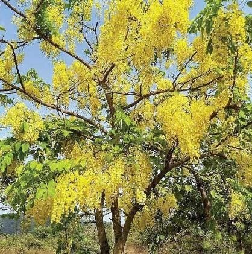
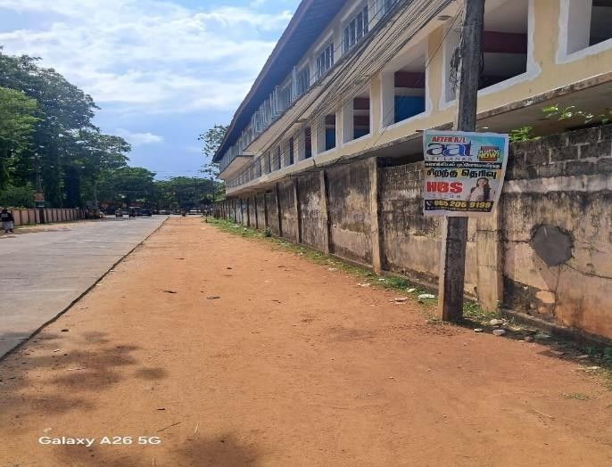
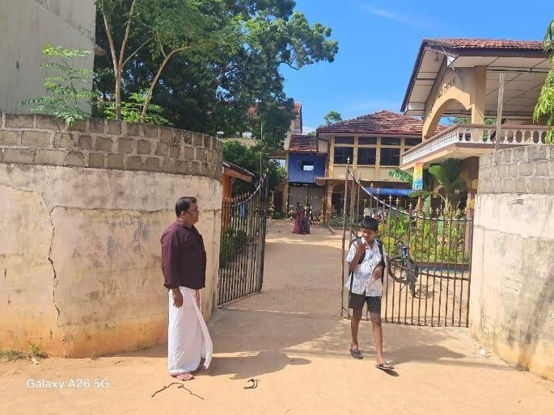
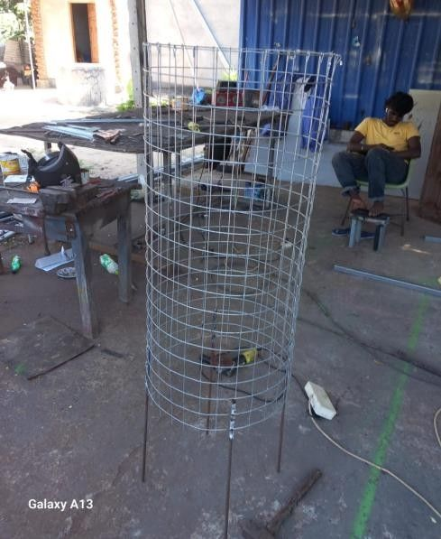
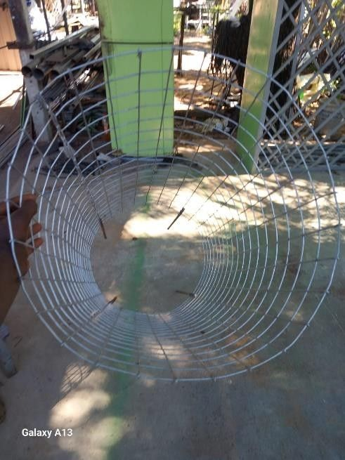

🌱 இந்தத் திட்டம் பற்றி
நீங்கள் ஸ்கேன் செய்த இந்த மரம், இராமகிருஷ்ண மிஷன் சிவானந்த தேசிய பாடசாலையின் 2006 சாதாரணதரம் மற்றும் 2009 உயர்தரத்தில் கல்விகற்ற பழைய மாணவர்களால் (“90 Batch – Friends Forever, One Family”) நடப்பட்ட 12 திருக்கொன்றை மரங்களில் ஒன்றாகும்.
📍 இடம்: விபுலானந்தர் வீதி, விவேகானந்தர் கட்டடத்தொகுதி எல்லைச் சுவர் ஓரம், சிவானந்த தேசிய பாடசாலை, கல்லடி உப்போடை, மட்டக்களப்பு.
இந்த நடைபாதை கடுமையான வெயிலுக்கும் தூசிக்கும் முகங்கொடுக்கிறது. தினமும் இவ்வழியால் நடக்கும் நூற்றுக்கணக்கான மாணவர்கள், பெற்றோர்கள் மற்றும் பொதுமக்களுக்கு நிழல் தரும் குளிர்ந்த பசுமைப் பாதையை உருவாக்குவதே எமது நோக்கம்.
🤝 நீங்கள் எப்படி உதவலாம்?
- மரத்தையும் அதன் பாதுகாப்புக் கூடத்தையும் சேதப்படுத்த வேண்டாம்.
- மரத்தின் அருகே குப்பை போட வேண்டாம்.
- கோடை காலத்தில் ஒரு குவளை நீர் ஊற்றுங்கள் 💧
- மரத்திற்குச் சேதம் ஏற்பட்டால் எமக்குத் தெரியப்படுத்துங்கள்.
“இத்திட்டம் வெறும் மரம் நடுதல் மட்டுமல்ல — எமது பாடசாலைக்கு நாம் வழங்கும் நன்றிக் கடனும், மட்டக்களப்பு மக்களுக்கான பசுமைப் பரிசும் ஆகும்.”
🌼 திருக்கொன்றை மரம்
Cassia fistula · Golden Shower Tree

முக்கிய நன்மைகள்
- அழகு மற்றும் நிழல்: கோடை காலத்தில் (சிறப்பாக சித்திரை மாதத்தில்) மஞ்சள் நிறத்தில் பூத்துக் குலுங்கும். இது கண்களுக்குக் குளிர்ச்சியையும் நல்ல நிழலையும் தரும்.
- மருத்துவ குணங்கள்: இதன் இலைகள், பூக்கள் மற்றும் காய்கள் ஆயுர்வேத மருத்துவத்தில் பயன்படுத்தப்படுகின்றன.
- நேர்மறை ஆற்றல்: மஞ்சள் நிறப் பூக்கள் ஐஸ்வர்யத்தையும் நேர்மறை ஆற்றலையும் தரக்கூடியதாக ஆன்மீக ரீதியில் கருதப்படுகின்றன.
🌳 எமது 12 மரங்கள்
| இல. | நடப்பட்டது | நட்டவர் / அன்பளிப்பு | நிலை |
|---|
📸 புதிய செய்திகள்
📄 திட்டத்தின் முழு விபரம்
பின்னணி
O/L (2006) மற்றும் A/L (2009) காலப்பகுதியில் இப்பாடசாலையில் கல்வி கற்கும் பேறு பெற்ற நாம், சிவானந்தியன் என்பதில் பெருமிதம் கொண்டு (“Proud as a Shivanandian”), எமது பாடசாலை அதிபர், பிரதி அதிபர்கள் மற்றும் ஆசிரியர்களின் ஆலோசனைக்கு அமையவும், பழைய மாணவர் சங்கத்தவர்களின் பங்கேற்புடனும் இத்திட்டத்தை வடிவமைத்துள்ளோம்.


நோக்கங்கள்
- சுற்றுச்சூழல் நிலைபேற்றுத்தன்மை: நகர்ப்புற பசுமைப் பரப்பை அதிகரித்தல், காற்றுத் தரத்தை மேம்படுத்துதல் மற்றும் வெப்பத்தைக் குறைத்தல்.
- பொதுமக்கள் மற்றும் மாணவர் நலம்: விபுலானந்த வீதியின் நடைபாதையில் இயற்கையான நிழலை உருவாக்கி, மாணவர்கள் மற்றும் பொதுமக்களைப் பாதுகாத்தல்.
- பாடசாலை அருகாமை அழகுபடுத்தல்: விவேகானந்தர் கட்டடத்தொகுதி வெளிப்புறத்தைப் பசுமையுடன் மேம்படுத்துதல்.
- நீண்டகாலப் பராமரிப்பு: ஒளிஊடுருவக்கூடிய மரப் பாதுகாப்புக் கூடங்கள் (Tree Guards), உரம் மற்றும் நீர்ப்பாசன வசதிகளை ஏற்படுத்தி மரங்களின் வளர்ச்சியை உறுதி செய்தல்.
செயற்பாடுகள் மற்றும் காலம்
- அன்பளிப்பாகப் பெறப்பட்ட 12 மரங்களை கார்த்திகை 2026 நடுப்பகுதியில் நடைபாதையோரமாக நடுதல்.
- இளம் மரங்களைப் பாதுகாக்க ஒளிஊடுருவக்கூடிய நாற்றுப் பேணல் கூடங்கள் அமைத்தல் — சூரிய ஒளியை அனுமதித்து, காற்று மற்றும் விலங்குகளிடமிருந்து பாதுகாக்கும்.
- மாதமொருமுறை மரத்தைச் சுற்றியுள்ள களைகளை அகற்றிப் பசளையிடுதல்.
- பழைய மாணவர்கள் மற்றும் சூழலை நேசிப்பவர்கள் இணைந்து, மரங்கள் குறிப்பிட்டளவு வளரும்வரை நீர்ப்பாசனம், பசளையிடுதல் மற்றும் பராமரிப்புப் பணிகளை மேற்கொள்வர்.


செலவு மதிப்பீடு (ரூ. 50,000)
| இல | விபரம் | அலகு | மொத்தம் (ரூ.) |
|---|---|---|---|
| 01 | ஒளி ஊடுருவக்கூடிய மரப் பேணல் கூடங்கள் (கூலியின்றி) | 3,250 × 12 | 39,000.00 |
| 02 | ஆரம்பப் பசளை | 500 × 4 | 2,000.00 |
| 03 | பராமரிப்பு / நீர் ஊற்றும் உபகரணங்கள் | 2,000 × 2 | 4,000.00 |
| 04 | போக்குவரத்து மற்றும் இதர செலவுகள் | 5,000.00 | |
| மொத்தச் செலவு | 50,000.00 | ||
அன்பளிப்புகளுக்கு நன்றி 🙏
- 12 நாற்றுப் பேணல் கூடங்களின் உருவாக்கல் கூலி — 2006 O/L / 2009 A/L சிவானந்தியன் ஒருவரால் அன்பளிப்பு.
- 12 திருக்கொன்றை மரக்கன்றுகள் — 2006 O/L / 2009 A/L சிவானந்தியன் ஒருவரால் அன்பளிப்பு.
📞 எங்களுடன் இணையுங்கள்
பார்வையாளர்களாக அன்றி பங்காளர்களாக இணைந்து இப்பசுமைச் செயற்திட்டத்திற்குக் கரம் கொடுப்போம்.